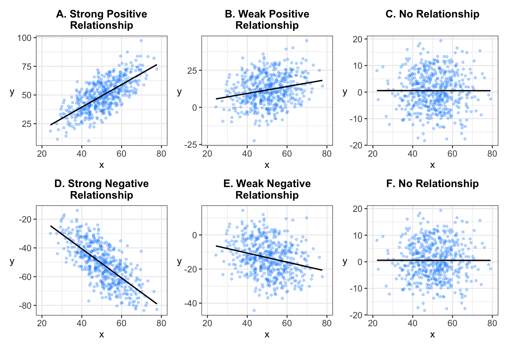

8 Linear Regression
Linear regression essentially brings together every major theme from the prior chapters. In what is known as “simple regression,” analysts evaluate the relationship between one independent variable, x, and a dependent variable, y. Put another way, regression evaluates the effect of x on y. In “multiple regression,” analysts evaluate the effects of multiple x variables on y. Importantly, regression analysis is capable of evaluating what can be called the “3 S’s” of an effect: (1) sign, or the direction of the effect (positive or negative); (2) the size of the effect, or by how much a given change in x increases y; and (3) statistical significance, or the inference we can make about whether the effect is non-zero in the population.
This chapter will first go through the mechanics of regression analysis: how to find the line of best fit, how to interpret it, and how to transform it into an inferential statistics exercise (using sample statistics and standard errors). Then, the chapter will discuss the assumptions that go into regression analysis, followed by applied examples in both simple regression and multiple regression.
8.1 Mechanics of Regression Analysis
At its core, regression possesses an elegance that makes it the most popular mode of statistical analysis for political scientists and social scientists more generally. The mission of regression analysis is straightforward. Consider the following graphs that Chapter 4 (Section 4.3) used to visualize the strength of a bivariate relationship between x and y.
Recall that the lines that go through the datapoints are called “lines of best fit,” and ggplot can add those in the graph. This line of best is also known as a regression line. It is the line that best fits the data, which here is the relationship (shown via a scatterplot) between x and y. The mission of regression analysis is to: (1) estimate the line of best fit and (2) summarize this line of best fit. For the latter, the critical “sample statistic” that summarizes the relationship is called a “slope estimate.” This estimate measures how much a given change in x “moves” or changes y. The steeper the slope in the graphs above, the larger this slope estimate will be. Consider the top row. The slope estimate would be the largest in graph A, followed by graph B, and then C. In graph A, a given increase in x generates a very large increase in y. In graph B, the same given increase in x generates a much smaller increase in y. Thus, the effect of x on y is much stronger in graph A than B. Graph C shows a “zero” or “null effect.” A given increase in x generates no change in y. Thus a flat slope, like in graph C, indicates a null effect of x on y, or no relationship between x and y.
Graphs D through F show analogous results for a negative effect of x on y. Graph D shows the strongest negative effect, followed by graph E. Graph F shows the same null effect as graph C. In graph D, a given increase in x generates a very large decrease in y. Graph E shows that the same given increase in x generates a smaller decrease in y.
These are the nuts of bolts of regression analysis. After summarizing the direction and size of the relationship, researchers use inferential statistics to evaluate whether the effect is statistically significant. Recall that for any inferential statistics problem, we need a sample statistic and a standard error for that sample statistic. In regression analysis, our sample statistic is the slope estimate representing the effect of x on y. The chapter will discuss the process of generating a standard error for this slope estimate, which allows the researcher to conduct a full hypothesis test of whether that slope is statistically significant, and in particular, whether the estimate is significantly different from 0, or a null effect.
8.1.1 Finding the Line of Best Fit
In the graphs above, the line of best fit in each graph “looks right” in that it goes through the middle of the datapoints in the scatterplot. Examine the scatterplot below and visualize the line of best fit.
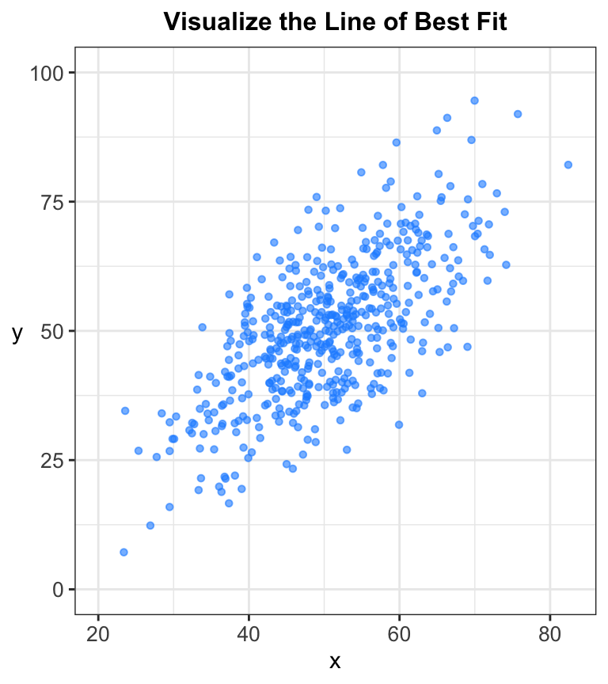
If you could draw it on the graph, I bet it would almost exactly match the actual line of best fit. This is one of the reasons why regression is so intuitive and elegant — because it closely tracks the data visualization lessons from Chapter 4.
Now when I include the actual line of best fit below, think about what actually makes this the line of best.
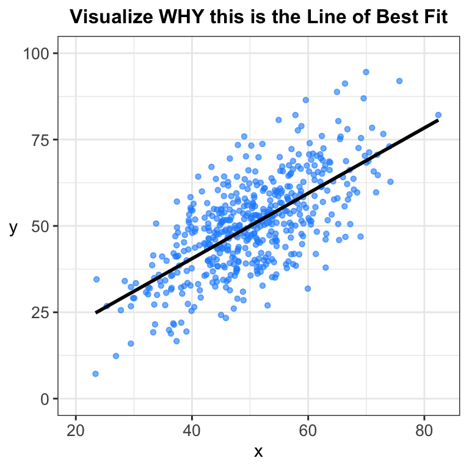
The fact that it cuts directly through the middle of the x-to-y pattern of datapoints actually tells us something about the “misses,” or the errors. The logic is analogous to estimating a mean and standard deviation (Chapter 6). The mean is the arithmetic middle of the distribution, but standard deviation, as a measure of dispersion, gives us an estimate of how much the datapoints “miss” the mean, or how much variation there is around the mean. But the mean is still our “best guess” for what a typical value would be because it falls at the point where there is “zero error.”
The same thing goes for a regression line of best fit. Think of it as the “average” value of y for a given value of x, while the datapoints that fall away from the regression line represent deviations (“errors”) from the line of best fit. Of course, no regression line is perfect, but we want to capture how well our regression line actually does fit the data. Recall the intuition on this exact point from Chapter 4:
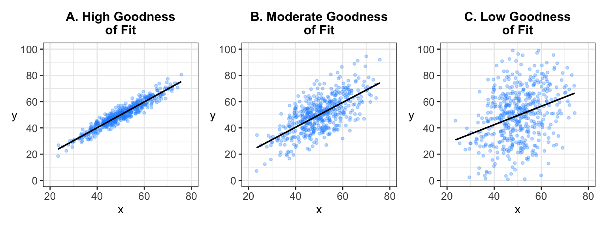
Graph A shows the highest goodness of fit, followed by graph B then C. The more tightly packed the datapoints are around the regression line, the higher the goodness of fit.
The graph below breaks down what a “miss” or “error” looks like in regression analysis. In the graph, the three dark blue dots represent three of the thousands of light blue datapoints in the scatterplot. The black line of best fit is included in the graph.
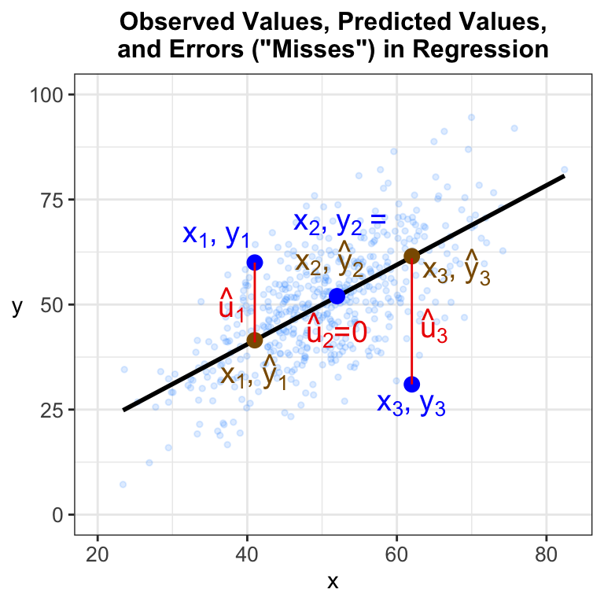
The graph conveys three critical pieces of information. First, the blue dots are observed values, the naturally occurring value for a particular observation. For example, observation 1 has an x value of just greater than 40 and a y of about 60. The coordinate, then, can be written as: \(x_1,~y_1\). Sometimes you will see coordinates with parentheses around them: \((x_1,~y_1)\). The figure omits those parentheses. Second, the brown dots represent the predicted values of y for a given value of x. The notation for a predicted value of y is \(\hat{y}\), which analysts pronounce as “y-hat” (yes, it’s that literal — the caret on top of y looks like a hat). Note that \(\hat{y}\) for a given value of x will always be directly on the regression line. Third, the red, vertical lines extending from the predicted values to the observed values are the misses, or errors. In regression analysis, these misses are called either errors or residuals. The notation for this error is \(\hat{u}\), or “u-hat.” The graph implies that \(\hat{u}\) is simply the observed value minus the predicted value, or more formally: \(\hat{u}_i=y_i-\hat{y}_i\), where the subscript i represents a given observation (e.g., observation 1, 2, etc.).
Once we have fit the regression line, like in the figure above, we can use residuals to assess how far off our prediction is from the actual observed value. For observation 1, the graph shows that the observed value misses on the high side of the regression line — a positive residual. For observation 3, the observed value misses the regression line on the low side — a negative residual. Some observations will be very close to the regression line. Observation 2 in the graph is right on the regression line, which means that for this given value of x: \(y_i=\hat{y}_i\) and \(\hat{u}_i=0\).
When we are starting from scratch with just a scatterplot of datapoints between y and x, we must ask, where does the line of best fit actually come from? How do we actually get the one line of best fit when there are actually an infinite number of candidates for line of best fit? The graph below illustrates this dilemma and begins to lay down the logic for the regression method known as ordinary least squares (or OLS). OLS is synonymous with what we commonly call “linear regression analysis.” The “L” in OLS implies that our regression line that best fits the data will be the one that minimizes the total degree of “error, or residuals, from the prior graph. The graph below displays seven possible lines of best fit. Line 5 is the line of best fit, but it is surrounded by other candidates, some of which are plausible candidates and some implausible.
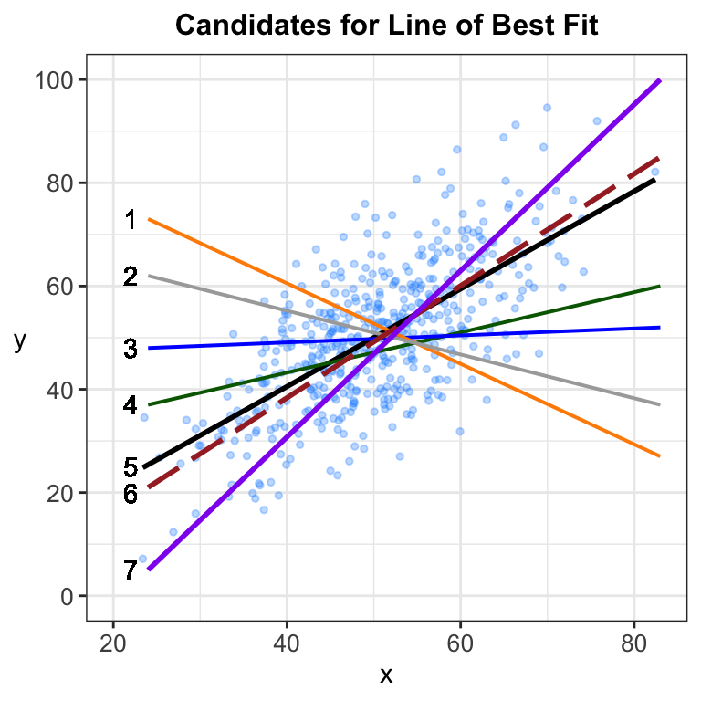
What makes lines 1 and 2 completely implausible? First, their slopes are negative when the scatterplot clearly implies a positive slope. Imagine plotting the observed versus predicted values for these lines like in the prior graph. The degree of error for lines 1 and 2 would be massive. Lines 3 through 7 are all in the right ballpark because each has a positive slope. Line 4 would generate a lower degree of error than line 3. Line 5, which we know is the line of best fit, would generate a lower degree of error than line 4. Line 6 (the long-dashed line) is very similar to line 5, meaning that its total degree of error would be lower than lines 7 or 4.
The intuition in this graph feeds the logic surrounding the “least squares” element of OLS for finding the one line of best. If the line of best fit is the one that minimizes the total degree of error, we need to work with a quantity that represents each candidate line’s “total error.” The quantity that represents this error is called the sum of squared residuals, or SSR. Remember that a residual, or an “error,” is represented by \(\hat{u}=y_i-\hat{y}_i\). Just like in the equation for variance and standard deviation in Chapter 6, if we simply added up the errors across all observations, the negative errors that miss below the line would offset the positive errors that fall above the line. Thus, we use the squared residuals, or \(\hat{u}_i^2\), which means that all of the \(\hat{u}_i^2\) quantities will be positive. Then, SSR — the critical quantity representing the “total error” for each candidate regression line — is represented via the following equation:
\[SSR = \sum\limits_{i=1}^{N}(y_i-\hat{y}_i)^2 = \sum\limits_{i=1}^{N}\hat{u}_i^2\]
The central mission in OLS is to find the one line that minimizes SSR. This boils down to a calculus problem and the use of “partial differentiation” — taking the partial derivative of SSR with respect to the slope estimate (and other parameters, which I will define below): \(\frac{\partial SSR}{\partial \beta}\).
The graph below shows a visualization for this logic, particularly SSR as a function of the parameters. In this case, I simplify the x-axis and make it the slope of each line from the prior graph (e.g., line 1 is a negative slope, line 3 is close to 0 but positive, and lines 4-7 have positive slopes).
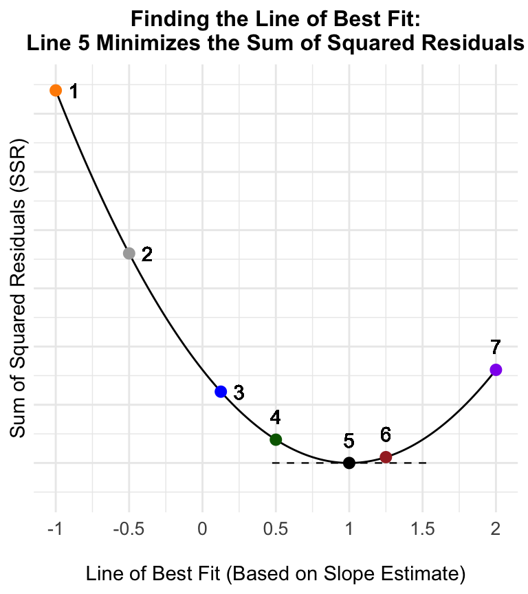
The graph shows that one and only one regression line minimizes SSR: That is line 5. The graph visualizes the differential calculus problem. In calculus, one solves for the partial derivative and then sets that derivative to 0 (which is the minimum in this case) and finds the slope parameter associated with that particular line. In the graph above, the line of best fit is the one for which the slope of the line tangent to the curve is 0 (which is associated with setting the partial derivative to 0 and solving for the slope). The dashed horizontal line in the graph is this line tangent to the curve when x=1 (line 5). The slope of that line is 0, which means the line associated with that point is the line of best fit — it is the one regression line that minimizes the sum of squared residuals (SSR).
The process of finding the line of best fit follows a well-known formula that was derived over 200 years ago. Retrieving the line of best fit is somewhat computationally intense, though modern statistical packages, like RStudio, can generate regression results in less than a second, meaning that analysts do not need to concern themselves with deriving the line of best fit manually. Once the line of best fit is determined, the task researchers do have to concern themselves with is interpreting the results of the regression. This task begins with summarizing the line of best fit.
8.1.2 Summarizing the Line of Best Fit
Once we derive the line of best fit, we need to summarize that line, particularly deriving and interpreting the core parameter estimates (or “statistics”). The figure below provides a visual representation for how to interpret a regression line of best fit. Many readers will already have familiarity with this exercise from their high school algebra class and their use of \(y=mx+b\). From that equation, b represented the y-intercept, or the point on the regression line where the line intersects with the y-axis. Then, “m” is the slope, or “rise over run.” The graph below uses the exact same logic but different notation. After describing this figure, I will then outline the regression equations in sample and population form.
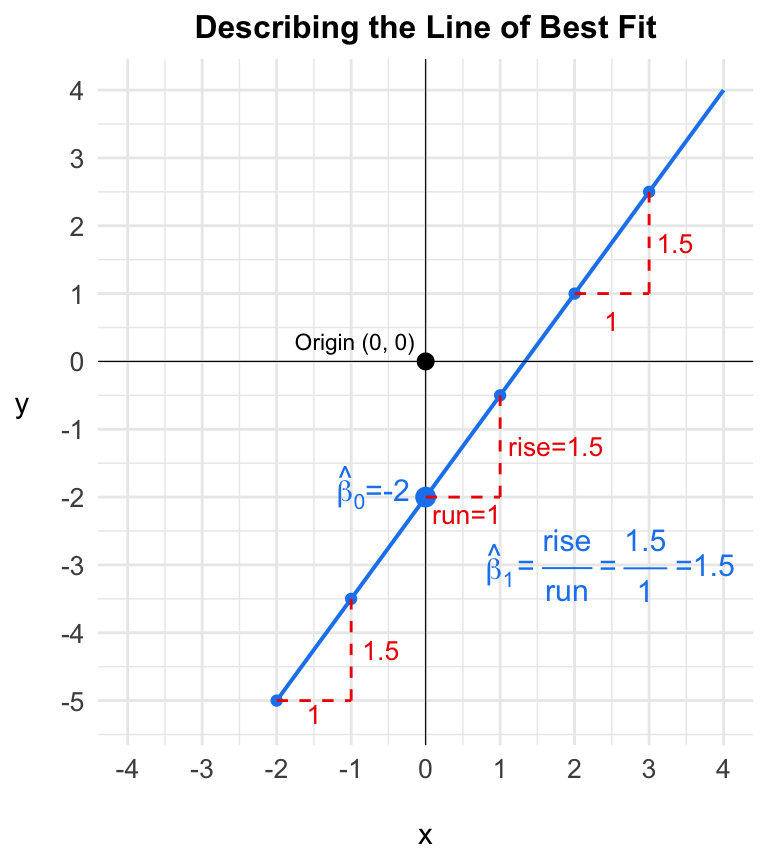
First, in any graph, the point at which x=0 and y=0 is called the origin. In this graph, the line of best fit does not run through the origin, of course. As discussed above, the point at which the line of best fit intersects with the y-axis is called the y-intercept. The y-intercept is the predicted value of y (i.e., since it is a point on the regression line) when x=0. In regression analysis, the y-intercept is denoted as \(\hat\beta_0\). It is one of the two parameter estimates in a “simple regression” equation, i.e., with just one independent variable, x. It gets a “hat” because I treat it as a sample estimate instead of a population parameter (via Chapter 7). In this line of best fit, then, \(\hat\beta_0=2\).
The second parameter estimate in a simple regression is the slope, which is denoted as \(\hat\beta_1\). The slope is our official estimate of the relationship between x and y. Put another way, the slope represents the effect of x on y. The slope is also a rate of change: For a given change in x, how much does y change? When analysts talk about “cause-and-effect,” the “cause” is x, or a given change in x, and the “effect” is how much y increases or decreases as a result of the change in x. Note that this logic matches the descriptions of x as the independent variable and y as the dependent variable; in regression analysis, the predicted value of y depends on x. Importantly, the slope, which is the effect of x on y, is always in the units of measurement that y takes on.
Using either the “effect” or “rate of change” intuition, the slope equals “rise over run.” The “run” is a given change in x, while the rise is the associated change in y for that given change in x. When ascertaining what the slope estimate, \(\hat\beta_1\), equals, it is customary to work with a 1-unit increase in x, or a “run” of 1. As the graph highlights, when “run” equals 1, that means 1 will be in the denominator and whatever the rise is, that is what the slope, \(\hat\beta_1\), will equal. The graph above illustrates the slope on three separate parts of the graph. We could start at the y-intercept. For a 1-unit increase in x (run=1), we need a rise (or increase) of 1.5 to get back on the regression line. Thus, the slope estimate, \(\hat\beta_1\), is 1.5. That is, for a 1-unit increase in x, y increases by 1.5 units. We could also start at x=-2; in increase from -2 to -1 (the same run of 1), y increases from -5 to -3.5 (a rise of 1.5). And the same goes for starting at x=2. The point of showing this three times is to illustrate that in a standard linear regression, the slope estimate is exactly the same across the entire regression line.
Given the elegance of linear regression and the rise of over run logic, analysts can interpret the slope in a flexible manner. For example, a 2-unit increase in x generates a 3 unit increase in y. Simply multiply both the denominator and the numerator in the rise-over-run equation by 2. Visualize this on your own in the graph above. Moreover, a slope is 1.5 would also equal a “negative rise” (or decrease, -1.5) over a “negative run” (-1), i.e., \(\frac{-1.5}{-1}\). That is, a 1-unit decrease in x generates a 1.5-unit decrease in y.
Note that all the points we have discussed fall along the line of best fit, which means they are predicted values of y, or \(\hat{y}_i\), for given values of x. Thus, we could describe the line of best fit in the graph below as:
\[\hat{y}_i=\hat\beta_0+\hat\beta_1x_i\] Once again, the equation contains two parameter estimates, \(\hat\beta_0\) (y-intercept) and \(\hat\beta_1\) (slope). This equation literally reflects the line of best in the graph above. However, returning to the graph below, we want to describe the line of best fit in the context of our sample data, which incorporates “errors,” or residuals.
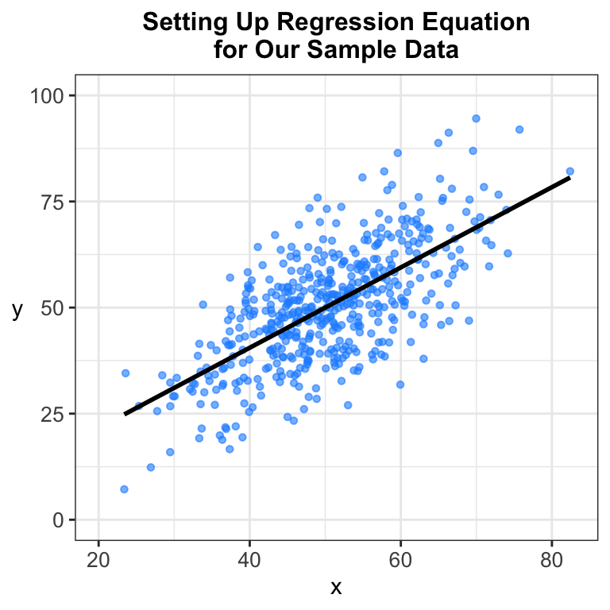
The sample regression equation for simple regression is thus:
\[y_i=\hat\beta_0+\hat\beta_1x_i +\hat{u}_i\] Note that since \(\hat{u}_1\) is added to the equation, we put \(y_i\) instead of \(\hat{y}_1\) on the left-hand side of the equation. This regression equation describes the sample. The “hats” above each \(\beta\) mean that these are sample statistics, which are estimates of a parameter. When we do hypothesis testing later in the chapter, the sample statistic of interest will be \(\hat\beta_1\), which represents the effect of x on y. As discussed earlier, the OLS solution for actually estimating \(\hat\beta_0\) and \(\hat\beta_1\) has been around for many years. In simple regression, the solution for \(\hat\beta_1\) is:
\[\hat\beta_1=\frac{\sum(x_i-\bar{x})(y_i-\bar{y})}{\sum(x_i-\bar{x})^2}=\frac{Cov(x, y)}{Var(x)}=r_{y,x}\frac{\hat\sigma_y}{\hat\sigma_x}\] Note how \(\hat\beta_1\) is first a function of covariance between x and y, or how x and y “go together” or are associated with one another. Since that component is in the numerator, the larger this covariance, the larger the slope estimate, \(\hat\beta_1\), will be. \(\hat\beta_1\) in a simple regression is also a function of the variance of x, or how dispersed x is around the mean. Since this quantity is in the denominator, the larger this variance relative to Cov(x, y), the smaller \(\hat\beta_1\) will be. However, keep in mind that Var(x) will be related to Cov(x, y). Note also that when Var(x) = 0, \(\hat\beta_1\) is undefined (since division by 0 is impossible). That makes sense — if no variation exists in x, then x is by definition not a “variable” (i.e., “not able to vary”). Finally, in the last part of the equation above, \(\hat\beta_1\) can be written in terms of Pearson’s correlation (r) between x and y as well as the sample standard errors for x and y. The equation shows how increases in correlation (in either the positive or negative direction, or as the value diverges away from 0) increase the size of \(\hat\beta_1\).
The equation for the y-intercept, \(\hat\beta_0\), in simple regression is: \(\hat\beta_0=\bar{y}-\hat\beta_1\bar{x}\). As I will discuss further below, the y-intercept, particularly in multiple regression, is not a meaningful quantity of interest. Analysts do report it, however, in regression output results. Instead, the focus of interpretation is the slope estimates, which represent the core quantities of interest.
The sample regression equation for multiple regression is below:
\[y_i=\hat\beta_0+\hat\beta_1x_{1i}+\hat\beta_2x_{2i}+\hat\beta_3x_{3i}...+\hat\beta_kx_{ki}+\hat{u}_i\] In this equation, we add multiple x variables (more than 1), up to a total of k independent variables. How large can k get? Sometimes analysts will include 4 or 5 independent variables, and sometimes they might include 10 or so. Those are fairly conventional numbers for how many independent variables analysts include in a multiple regression equation. The critical benefit of multiple regression is that we are capturing the effect of, e.g., \(x_1\), while controlling for, or holding constant, all other independent variables. Readers may know the Latin phrase for this logic as ceteris paribus, or “other things being equal.”
Recall the slope interpretation discussed earlier: For a 1-unit increase in x, y increases by \(\hat\beta_1\) units. This effect of x on y in regression analysis is called a marginal effect. A marginal effect is a slope estimate at any given point on the regression surface. From the prior figure that described the regression line, recall that when we have a linear “functional form” between x and y (i.e., a straight line as opposed to, e.g., a parabola), the marginal effect is the same across the entire line.1
In multiple regression, the marginal effect of a given x variable on y is also called a partial effect because of the “controlling for” and “holding constant” interpretation above. This partial effect interpretation for a marginal effect in multiple regression is actually another example of differential calculus and specifically a partial derivative, i.e., the derivative of a function with respect to a specific variable, like \(x_1\): \(\frac{\partial{y}}{\partial{x_1}}\). In multiple regression, one can calculate such a partial derivative for each independent variable. Let’s say we have a multiple regression with 3 independent variables:
\[y_i=\hat\beta_0+\hat\beta_1x_{1i}+\hat\beta_2x_{2i}+\hat\beta_3x_{3i}+\hat{u}_i\] When I take the partial derivative of the right-hand side of the equation with respect to \(x_1\), variables other than \(x_1\) are treated as constants. The derivative of a constant is 0. And the derivative of \(\hat\beta_1x_{1i}\) with respect to \(x_1\) is simply \(\hat\beta_1\).2. That logic again underscores the elegance of the linear regression model and specifically the “linearity in the parameters” element where the equation follows a simple “parameter times variable + parameter times variable + parameter times variable” pattern. The marginal effect of a given x in a multiple regression equation is literally its effect on y while holding constant the other independent variables. Thus, the marginal, “partial” effect of each x variable can be written as:
\[\frac{\partial{y}}{\partial{x_1}}=\hat\beta_1\] \[\frac{\partial{y}}{\partial{x_2}}=\hat\beta_2\] \[\frac{\partial{y}}{\partial{x_3}}=\hat\beta_3\]
Multiple regression, and the estimation of “partial” effects, adds a causal layer to evaluating the relationship between x and y. Recall from Chapter 2 that in experiments, random assignment of individuals to a treatment group (x=1) or control group (x=0) means that we are controlling for, or holding constant, every other individual-level variable. The treatment and control groups are equal, on average, in other traits. Multiple regression uses statistics instead of random assignment to control for additional independent variables; the researcher manually controls for additional factors that are necessary to account for. While multiple regression can never reach the peak level of causal inference that experiments reach, it is a step in the right direction. Discussion of regression assumptions below will continue with this topic.
8.1.3 Error Variance, Goodness of Fit (\(R^2\)), and Standard Errors
The population regression equation for simple regression is:
\[y_i=\beta_0+\beta_1x_i +u_i\] In simple regression, the true population parameters, for which we retrieve sample estimates, are \(\beta_0\), the population y-intercept, and \(\beta_1\), the population slope. Like any parameter from the equation above, each parameter is an unknown quantity from the population about which we want to make an inference based on our sample. One part of interpreting regression output is to engage with inferential statistics to draw inferences about the sample statistics relative to the population. That means we need to estimate a standard error for our slope estimate, \(\hat\beta_1\). One critical piece of information we need first is the error variance, or residual variance, from the regression equation. This is denoted as \(\hat\sigma_\hat{u}^2\). It represents how much dispersion exists in the residuals, which recall are the “misses” from the observed value of y (\(y_i\)) to the predicted value of y (\(\hat{y}_i\)).
We have already discussed the “sum of squared residuals,” or SSR, which is the sum over all observations of the squared deviations between \(y_i\) and \(\hat{y}_i\). To get the error variance, we divide that quantity by the degrees of freedom, which in regression is N - k - 1; k is equal to the total number of independent variables in the regression model. In simple regression with just one independent variable, k=1. If there are 7 independent variables, k=7. The extra “1” in the degrees of freedom equation is for the y-intercept, \(\hat\beta_0\). Recall that degrees of freedom generally is sample size minus the total number of parameters we have to estimate. Thus, the error variance can be written as:
\[\hat\sigma_\hat{u}^2=\frac{SSR}{N-k-1}\] While it is most common to work with error variance, the square root of this quantity, \(\hat\sigma_\hat{u}\), is called the standard error of the regression.
Importantly, error variance represents what is left unexplained in a regression equation. Our independent variables explain variation in y, from a “goodness of fit” perspective, while the error variance captures how much “random noise” there is in y, i.e., how much variance in y that is left unexplained.
The flipside of error variance is a goodness-of-fit statistic, \(R^2\), which captures the fraction of the variance in y that our included independent variables explain. \(R^2\) is derived from understanding two more “sum of squares” quantities, in addition to the aforementioned SSR. These include the “total sum of squares” (SST) and “explained sum of squares” (SSE).
\[SST=\sum\limits_{i=1}^N(y_i-\bar{y})^2\] \[SSE=\sum\limits_{i=1}^N(\hat{y}_i-\bar{y})^2\]
SST represents the total variation in y, while SSE represents the explained variation in y, i.e., the variation in y explained by the independent variables. Since SSR represents the unexplained variation in y, one can see how these three sums of squares are related:
\[SST = SSR + SSE\] \[SSR=SST-SSE\] \[SSE=SST-SSR\]
As a goodness-of-fit measure, \(R^2\) represents how much variance, or variation, in y is explained by the independent variables in the regression. Thus, the equation for \(R^2\) is:
\[R^2=1-\frac{SSR}{SST}=\frac{SSE}{SST}\]
\(R^2\) is a proportion that ranges from 0 to 1. Researchers will commonly multiply the value by 100 to turn it into a percentage. They will often interpret \(R^2\) as follows: The independent variables explain about Z% of the variance in y (where Z is a number between 0 and 100). In simple regression, \(R^2\) is literally Pearson’s correlation, r, squared. Thus, correlation relates to regression, particularly in how we discussed that for very high correlations, the datapoints will be tightly packed around the line of best fit. The same logic goes for \(R^2\): The tighter the datapoints are dispersed around the line of best fit, the higher \(R^2\) will be. In practice, it is common for researchers to report \(R^2\) values in the range of 0.10 to 0.30. Those are actually quite normal in survey research. For country-level analysis, like in V-Dem, \(R^2\) may be higher — in the ballpark of 0.50 or 0.60. \(R^2\) values that fall below 0.05 are in the smaller range. While reporting and interpreting \(R^2\) is important, in regression analysis, researchers prioritize interpretation and inference of the slope (\(\hat\beta\)) estimates.
In simple regression, the sampling variance of the slope estimate, \(\hat\beta_1\), is:
\[Var(\hat\beta_1)=\frac{\hat\sigma_\hat{u}^2}{\sum(x_i-\bar{x})^2}\]
Then, the standard error of the slope estimate, \(\hat\beta_1\), in simple regression is simply the square root of this equation:
\[SE(\hat\beta_1)=\sqrt{Var(\hat\beta_1)}\]
Analysts use this standard error estimate in conjunction with \(\hat\beta_1\) to do inferential statistics exactly the same way we did so in Chapter 7, particularly in the difference of means test.
Note that in simple regression, three factors influence the size of the standard errors: (1) sample size, N (which enters in through the error variance equation); (2) error variance, \(\hat\sigma^2_\hat{u}\); and (3) variance in x. Each factor relates to how we discussed sampling error in Chapter 7. The more informative the data are, the lower the random sampling error, or standard error estimate. The larger the sample size, the more informative our data, and the smaller our standard error. The smaller the error variance, the more our independent variables are explaining y. Recall the prior graph showing variation in “goodness of fit.” The lower the goodness of fit, the higher the error variance — the datapoints are widely dispersed around the line of best fit. The higher the goodness of fit, the lower the error variance. Thus, lower error variance is associated with a smaller standard error of \(\hat\beta_1\). Finally, the more variance there is in x (and thus the more information there is in x), the lower the standard error.
In multiple regression, one more aspect is added to the sampling variance for a given x variable. The following is the equation for the sampling variance for a \(\hat\beta_j\) associated given independent variable, \(x_j\):
\[Var(\hat\beta_j)=\frac{\hat\sigma_\hat{u}^2}{\sum(x_i-\bar{x})^2(1-R_j^2)}\]
And once again, to get the standard error for \(\hat\beta_j\):
\[SE(\hat\beta_j)=\sqrt{Var(\hat\beta_j)}\]
In the sampling variance equation, note that the additional item relative to the simple regression equation is \((1-R_j^2)\) in the denominator. \(R_j^2\) is NOT the model \(R^2\) as discussed above. Instead, \(R_j^2\) is a measure of multicollinearity among the x variables in the model. Multicollinearity means how correlated the x variables are with each other. It is literally the \(R^2\) from this regression model (in the case of three independent variables):
\[x_{1i}=\hat\beta_0+\hat\beta_1x_{2i}+\hat\beta_2x_{3i}+\hat{u}_i\]
That equation may seem counterintuitive. For a given \(x_j\), \(R_j^2\) measures how much variation in \(x_j\) is explained by remaining x variables. As this multicollinearity increases, the standard error will increase as well. Once again, think of factors that influence standard errors as “informational issues.” If the other x variables are strongly correlated with \(x_j\), that means \(x_j\) is not bringing a great of unique information to the regression context; it is not really “holding its own.” It is not as informative because it overlaps so much with variation from the other x variables. Thus, in multiple regression, we can now summarize the four factors that influence the size of standard errors:
Four Factors that Influence the Size of Standard Errors in Multiple Regression:
- As sample size, N, increases, standard errors will decrease.
- As error variance, \(\hat\sigma^2_\hat{u}\), increases, standard errors will also increase.
- As variation in a given x increases, the standard error for that given \(\hat\beta\) will decrease.
- As multicollinearity for a given x increases, the standard error for that given \(\hat\beta\) will increase.
8.2 Regression Assumptions
The OLS regression method contains multiple assumptions that are required for certain types of interpretations about both the slope estimates and the standard errors.
8.2.1 Linearity in the Parameters
This first assumption centers on a more functional concern about our model specification. “Linearity in the parameters” means that the regression follows this basic form of “parameter times variable” plus “parameter times variable” plus “parameter times variable.” The parameters, the \(\beta\)s, are multipliers. These \(\beta\)s cannot be transformed from the form in the equation below.
\[y_i=\beta_0+\beta_1x_{1i}+\beta_2x_{2i}+\beta_3x_{3i}+{u}_i\]
In other words, they cannot be squared or exponentiated. This equation would be nonlinear in the parameters:
\[y_i=\beta_0+\beta_1^2x_{1i}+exp(\beta_2)x_{2i}+x_{3i}^{\beta_3}+{u}_i\]
Any transformation to a \(\beta\) itself in the equation makes the equation nonlinear in the parameters.
Importantly, this assumption is about the \(\beta\)s and not the x variables. This marks the difference between linearity in the parameters versus linear and nonlinear functional forms between x and y. Recall the discussion from Chapter 4 about nonlinear functional forms. While we have thus far centered most material around linear functional forms, where the line of best fit is a straight line (i.e., linear), OLS can accommodate nonlinear relationships, or nonlinear functional forms, between x and y. In most political science contexts, researchers estimate linear functional forms. But some theories specifically call for a nonlinear functional form between x and y. To formalize this difference, consider the equations below.
Linearity in the parameters, nonlinear functional form between \(x_1\) and \(y\):
\[y_i=\beta_0+\beta_1x_{1i}^2+\beta_2x_{2i}+\beta_3x_{3i}+{u}_i\]
In this case, we transform \(x_1\) by squaring it. This is an example of an “exponential” functional form, where the effect x is smaller at lower ranges of x but then “takes off” and becomes very large at higher ranges of x. Note that the linearity in the parameters assumption is upheld in this equation because \(\beta_1\) is an untransformed multiplier.
8.2.2 Observations are Independent from One Another
OLS also assumes that the observations, or units of analysis, are independent from one another. That is, observation 1’s values of y and x do not depend on observation 2 or 3’s values. When observations are chosen via random sampling, this assumption holds. An example where this assumption would not hold is if I did house-to-house surveys, and I surveyed multiple adults in the same household (e.g., spouses or in a multigenerational home, the parents and the grandparents). In this case, the values of variables for people in the same household may be related because of shared experiences. Those observations would not be independent of one another.
Thus, random sampling is the gold standard for meeting this assumption. This assumption can break down in other settings, like time series data (see Chapter 2) where the observations fall in sequential time points like years or months. If we are tracking unemployment across time, past values are not independent of current values. Thus, when analysts examine such time series data, they account for this temporal dependence.
8.2.3 Exogeneity
The exogeneity assumption is the most important assumption for purposes of maximizing the causal and ceteris paribus interpretations of the \(\beta\) estimates. Exogeneity is an assumption about our independent variables. “Independent” means that an x variable is independent from both y and the other x variables. It may seem strange to think of x as being “independent” from y, but what I mean is that x is not simultaneously caused by or influenced by y. In other words, y depends on x, but x does not depend on y. x is the “influencer” in the relationship; it is “causally prior” to y. When exogeneity fails and x actually does depend on y, x is said to be endogenous. Put another way, including this type of x variable in our regression model induces endogeneity, which is the opposite of exogeneity and thus a violation of this assumption.
An x variable can also be endogenous to other independent variables in the model. Let’s say we have reason to believe that \(x_2\) may cause \(x_1\), which would mean that \(x_1\) is potentially an endogenous explanatory variable in the model. This endogeneity poses a specific threat to the ceteris paribus condition behind partial marginal effects. Recall that a partial effect is the effect of x (e.g, for a one-unit increase in x) on y while controlling for or holding constant the remaining x variables. If \(x_1\) depends on \(x_2\), then we cannot vary \(x_1\) (a one-unit increase) without \(x_2\) also varying; in other words, we cannot vary \(x_1\) while holding \(x_2\) constant. And the same goes for the marginal effect of \(x_2\). In these cases, one x variable confound the effect of another x variable.
In sum, an x variable is exogenous if it is not explained by any other variable in the regression model. x is endogenous if it is explained by another variable in the regression model, which poses a major threat to the causal direction from x to y.
Exogeneity is a key assumption for causal inference, but it is not the only one, of course. The assumption is connected to the classic “correlation versus causation” conundrum. Under the exogeneity assumption, the causal flow goes one way: From x to y. For correlation per se, researchers are agnostic about the causal flow and are only concerned with how much two variables “go together.” Think about the covariance equation or the correlation equation from Chapter 6. That equation has nothing to do with the causal flow from one variable to another. The linear regression model, by the very nature of how we specify y as a function of x, does specify this causal flow, so we have to posit a specific assumption about exogeneity. As Chapter 2 discussed, researchers use theory and hypotheses to specify a causal relation between x and y.
Second, researchers use research design as a setup for the empirical estimation of causal effects of x on y. As discussed earlier, regression analysis requires researchers to manually specify the additional x variables they should control for; statistics, and the estimation of “partial effects,” do the heavy lifting on ceteris paribus grounds. That is a major difference from experiments — the gold standard for causal inference — which do the heavy lifting for causal inference on the design side via random assignment to treatment versus control groups.
8.2.4 Residuals are “White Noise”
Once we estimate our model, including all necessary independent variables, we assume that the residuals, which capture “unexplained” or omitted explanatory factors, are “white noise,” or completely random. This assumption speaks to the population but has implications for the sample aspects. First, the residuals, \(u_i\), follow a normal probability distribution with mean 0 and a variance that equals the aforementioned “error variance” at the population level, \(\sigma_u^2\). This is written as:
\[u_i \sim N(0, \sigma_u^2)\]
The equation means that the residuals are drawn from a population with a mean of 0; they are centered on the regression line such that the average residual is 0. In population form, we say that the expected value is 0. Since y is a function of the residual, u, y is also assumed to be normally distributed, written in population form:
\[y_i \sim N(\beta_0+\beta_1x_{1i}+\beta_2x_{2i}...+\beta_kx_{ki},~ \sigma_u^2)\]
That is, each y value is drawn from a normal distribution with a mean that is the “true” regression line and the same error variance, \(\sigma_u^2\).
The second part of the “white noise” element of the residuals is based on the error variance, \(\sigma_u^2\). Note that each residual, \(u_i\), is drawn from a distribution with the same error variance, \(\sigma_u^2\). This leads to the second aspect of this assumption that the residuals are assumed to be “homoscedastic.” Homoscedasticity means that the error variance is assumed to be constant across the entire regression surface; the error variance is \(\sigma_u^2\) at low, middle, and high values of the x distribution. The graph below illustrates both the normality and homoscedasticity assumptions for three data points.
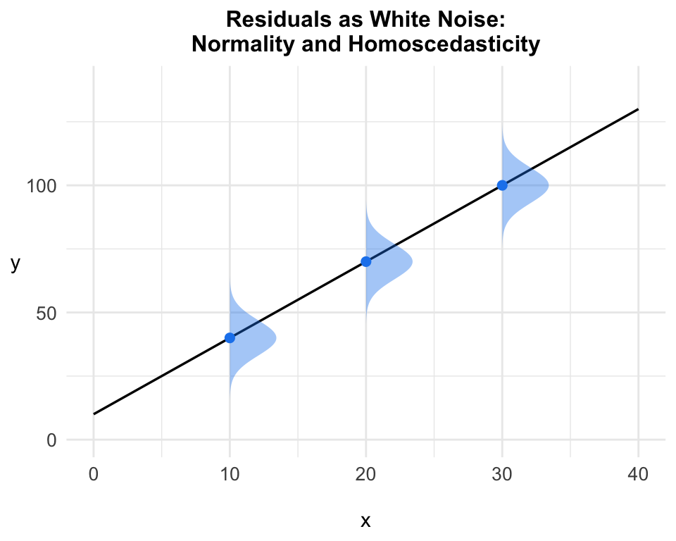
Once again, this represents the population regression, where datapoints are drawn from a normal distribution that is centered on the regression line (via the assumptions above). The opposite of homoscedasticity is heteroscedasticity, which means that the error variance, \(\sigma_u^2\), would be different across the range of x. The homoscedasticity assumption is most critical for the standard error estimates. Because \(\sigma_u^2\) is in the numerator of the standard error formula, the presence of heteroscedasticity would imply that the standard errors would also be different across the range of x, which OLS cannot accommodate. Methods exist — e.g., the use of “robust standard errors” — to account for the existence of heteroscedasticity by making corrections to the standard errors.
An implication from the second assumption above (observations are independent) is that the residuals are also uncorrelated with each other, which is another way to say that the residuals are independent from one another.
8.2.5 No Perfect Multicollinearity
Recall that the estimate of multicollinearity for each independent variable, \(R^2_j\), is included in the formula for standard errors in multiple regression. While OLS can handle some degree of multicollinearity, it cannot handle a perfect degree of multicollinearity, i.e., when \(R^2_j=1\). One can see that when \(R^2_j=1\), the standard error estimate is undefined (division by zero). It can be shown in the derivation of the partial slopes, \(\hat\beta\), in multiple regression that \(R^2_j=1\) also triggers an undefined \(\hat\beta\). The assumption also makes sense intuitively. If three or four other independent variables perfectly account for x, then x and those other variables are attempting to exert similar types of influence in the regression model. x is incapable of exerting any unique influence.
This issue is more of a “functional assumption.” Researchers would almost surely not include independent variables in a regression model that would trigger perfect multicollinearity. On the other hand, researchers do need to be attuned to high levels of multicollinearity and their effects on standard errors as well as slope estimates.
8.3 Simple Regression: Estimation and Interpretation
I now move to applications of regression analysis using datasets from prior chapters. I begin with simple regression (just one independent variable), and I return to the example from Chapter 7 on the effect of social media consumption on affective polarization. Chapter 7 concluded with a difference of means hypothesis test of whether those high in social media consumption have higher affective polarization than those low in social media consumption. The results showed that social media consumption does indeed increase affective polarization, and the effect was statistically significant.
Below, I report the same test using linear regression instead. As I will show, we get the exact same result because a simple regression is doing the exact same thing as a difference of means test in this example: It is generating the difference in affective polarization between the low and high affective polarization groups, and it is evaluating whether that difference is statistically significant. Linear regression is extremely valuable for hypothesis testing because one can conduct such testing in one fell swoop by examining the regression output.
Key to interpreting regression output is using the aforementioned “3 S’s” framework for interpreting slope estimates, \(\hat\beta\). Researchers commonly call the slope estimates regression coefficients as well. Recall that the slope estimates (and partial slope estimates in multiple regression) take center stage in regression analysis. We are evaluating the effect of x on y, and \(\hat\beta\) gives us critical information on this effect.
3 S’s Framework for Interpreting the Effects of x on y (\(\hat\beta\))
Sign, or the direction of the effect (positive or negative). When interpreting the direction of the effect of x on y, make it substantive, like you are answering the hypothesis. For example, “As x increases, y increases as well.”
Size: As discussed in this chapter, linear regression gives us an elegant, powerful means of communicating size via the rise-over-run interpretation of a slope estimate, \(\hat\beta\). If \(\hat\beta\) has a positive sign, that means that for a one-unit increase in x, y increases by \(\hat\beta\) units. If \(\hat\beta\) is negative, for a for a one-unit increase in x, y decreases by \(\hat\beta\) units. Remember to always communicate these “unit increases or decreases” in terms of the measurement units the x and y variables take on. Analysts can communicate additional interpretations based on the ease of interpreting a slope estimate. For example, “for a 10-unit increase in x, y increases by \(\hat\beta \times10\) units.”
Statistical significance: Linear regression makes doing inferential statistics very simple because all of the key information we need — the \(\hat\beta\)s, standard errors, test statistics (t), and the p-values — is included in the output. Moreover, we assume that the null hypothesis, \(H_0\), is 0, i.e., that the effect of x of y is 0. That means that for a given \(\hat\beta\), we can look directly at the p-value associated with the test statistic (t), which follows Student’s t distribution (from Chapter 7), and draw a conclusion about statistical significance. If \(p < 0.05\) (assuming the 95% confidence level, or \(\alpha\)=0.05), the effect of x on y is statistically significant. If \(p \ge 0.05\), then the effect of x on y is not statistically significant (or statistically insignificant). Once again, in significance testing of this sort, we are making an inference from sample to population and evaluating whether the sample statistic, \(\hat\beta\), is significantly different from 0 (the null hypothesis value).
The 3 S’s framework captures the nuts and bolts of interpreting regression output. It is the primary way that social scientists communicate their results in journal articles and books. In addition to interpreting the slope estimates, analysts also interpret the regression model’s \(R^2\), which captures the overall fit of the model to the data. In situations where researchers suspect that certain regression assumptions are not met, they will often conduct diagnostics or “robustness checks” to ensure that the results do not change because of an issue in the regression model.
8.3.2 The Effect of Party Identification on Supreme Court Approval
Chapter 4 and Chapter 6 analyzed the association between party identification and approval of the Supreme Court’s controversial presidential immunity ruling. We found that Republicans were more approving of the ruling than Democrats. This decision by the Court is one of many in the line conservative rulings since 2020 when President Donald Trump appointed his third justice, thus resulting in a six-justice conservative supermajority. Thus, we might also expect that Republicans are more approving of the Supreme Court generally than Democrats (Bartels and Johnston 2020; Davis and Hitt 2026). The ANES survey contains a 101-point thermometer rating for the Supreme Court. Below, I code that variable to remove missing data. I also summarize it.
# Coding Supreme Court thermometer variable
anes <- anes |> mutate(sctherm = ifelse(V242143<0 | V242143>100, NA, V242143))
library(psych)
library(knitr)
anes |> select(sctherm) |> describe(fast = TRUE) |> kable(digits=2)| vars | n | mean | sd | median | min | max | range | skew | kurtosis | se | |
|---|---|---|---|---|---|---|---|---|---|---|---|
| sctherm | 1 | 4870 | 48.96 | 26.54 | 50 | 0 | 100 | 100 | -0.1 | -0.72 | 0.38 |
The mean and median are very close to each other and in the middle of the thermometer scale. The degree of skewness appears quite minimal. Before running the model, the frequency table below reminds us how party identification is coded. Understanding how the variable is coded is critical for doing interpretations using the “3 S’s” framework.
library(questionr)
freq(anes$partyid) n % val%
[1] Str Dem 1314 23.8 24.0
[2] Wk Dem 616 11.2 11.2
[3] Ind Dem 714 12.9 13.0
[4] Ind 380 6.9 6.9
[5] Ind Rep 716 13.0 13.1
[6] Wk Rep 577 10.5 10.5
[7] Str Rep 1166 21.1 21.3
NA 38 0.7 NAThe variable ranges from 1 to 7, where 1=Strong Democrat and 7=Strong Republican. Thus, a “1-unit increase” will be every 1 step increment from Democrat to Republican (e.g., from 1 to 2 or from 2 to 3). We can examine how a 6-unit change influences Supreme Court approval, which would represent a change from Strong Democrat (the minimum value) to Strong Republican (the maximum value).
The first command below estimates the multiple regression, while the second generates the output. Note that using the tips from the last simple regression, I renamed the variables and changed the order so that party is at the top followed by the intercept.
sc_sr <- lm(sctherm ~ partyid, data=anes)
htmlreg(list(sc_sr),
caption = "<b>The Effect of Party on Supreme Court Approval</b>",
center = TRUE,
digits=2,
include.adjrs = FALSE,
custom.coef.names = c("Intercept", "Party"),
reorder.coef = c(2, 1),
custom.gof.names = c(NA, "N"))| Model 1 | |
|---|---|
| Party | 6.13*** |
| (0.14) | |
| Intercept | 25.19*** |
| (0.64) | |
| R2 | 0.28 |
| N | 4848 |
| ***p < 0.001; **p < 0.01; *p < 0.05 | |
Running through the “3 S’s” framework, the results first show that party influences Supreme Court approval like we would expect: As party identification moves from Democratic to Republican, Supreme Court approval increases. Put another way, Republicans are more approving of the Court than Democrats. For every one-step increase in the Republican direction, Supreme Court approval increases by 6.13 degrees. That effect is quite large. A change from Strong Democrat (=1) to Strong Republican (=7), i.e., a 6-unit increase, results in a 36.78 degree increase in Court approval. To get that value, all I need to do is multiple \(\hat\beta_1\) (6.13) by 6: \(6.13 \times 6 = 36.78\). Once again, that is a quite large effect.
We could also graph the predicted Supreme Court thermometer values, \(\hat{y}\), as a function of party identification. To get these seven \(\hat{y}\) values, we would just plug in each party value into this equation: \(\hat{SC}_i=25.19+6.13party_i\). The marginaleffects package can calculate this exact output using the predictions command. I save this as a “tibble” (which is akin to a smaller dataset in RStudio) called “yhat.” To print out this data below and to show more than one decimal point, I simply set yhat2 to a “data frame” of the yhat tibble, which I then print out below.
library(marginaleffects)
yhat <- predictions(sc_sr, by="partyid")
yhat2 <- data.frame(yhat) |> select(partyid, estimate) |> print(digits=4) partyid estimate
1 1 31.32
2 2 37.45
3 3 43.58
4 4 49.71
5 5 55.84
6 6 61.97
7 7 68.10The column for \(\hat{y}\) is called “estimate.” Note that the y-intercept, \(\hat\beta_0\), in this example is actually what is called an “out-of-sample” prediction. \(\hat\beta_0\) is always \(\hat{y}\) when x=0, but in our ANES dataset, x never equals 0; party identification ranges from 1 to 7. If we coded party to range from 0 to 6 instead, then \(\hat\beta_0\) would correspond with \(\hat{y}\) when party=0, or strong Democrat. The yhat tibble reports additional information for inferential statistics purposes, but at this point, we are interested only in the \(\hat{y}\) value associated with party.
Note how this table shows that for every one-step increase in party (from 1 to 2 or from 5 to 6), the predicted Supreme Court thermometer rating increases by about 6.13 degrees. The figure below directly graphs this data as a line with points for the seven \(\hat{y}\) values.
yhat |>
ggplot(aes(x=partyid, y=estimate)) +
geom_point() +
geom_line() +
labs(x="\nParty Identification", y="Predicted SC Thermometer\n",
title="Predicted Values of Supreme Court Approval\nas a Function of Party") +
scale_x_continuous(limits = c(1, 7), breaks = seq(1, 7, 1),
labels=c("Str Dem", "Wk Dem", "Ind Dem", "Ind",
"Ind Rep", "Wk Rep", "Str Rep")) +
scale_y_continuous(limits = c(20, 80), breaks = seq(20, 80, 10)) +
theme_bw() +
theme(plot.title = element_text(size=12, face="bold", hjust=.5),
axis.title = element_text(size=11),
axis.text = element_text(size = 10))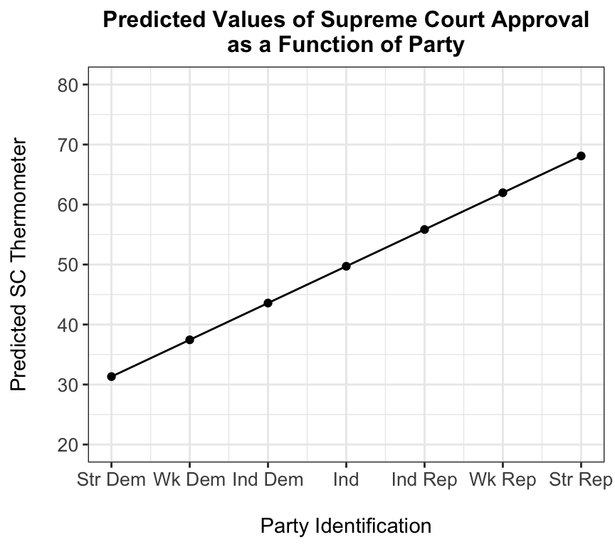
Researchers will sometimes report graphs like these to show both the size of the effect of x on y and also the levels of y. That is, y changes from what to what? The graph shows, for example, how a change from strong Democrat to weak Democrat increases Court approval from 31.32 to 37.45 degrees. A change from strong Democrat to strong Republican increases Court approval from 31.32 degrees all to the way up to 68.10 degrees. Once again, these are values based on the regression model and provide representations of the data based on our regression and the assumptions that go into it.
8.4 Multiple Regression: Estimation and Interpretation
Now I will examine the effect of party on Supreme Court evaluations in a multiple regression framework. I will give an example for how researchers think through what additional variables to control for. As discussed earlier, researchers choose which variables to control for based largely on theory (see Chapter 2) and past research findings. My mission is still to evaluate the effect of party on Supreme Court approval, but in multiple regression, I want to examine this effect while controlling for additional variables. The researcher manually enters these additional independent variables into the regression equation.
In this example, I control for five demographic variables: Education, income, sex, age, and race. By including these variables in a multiple regression model, I can examine the effect of party on Court evaluation when holding these variables constant — ceteris paribus.
The commands below create and recode new variables for these five independent variables. Education is measured as a four-category ordinal variable (varying from 1 to 4) based on level of education an individual attained. Income is also ordinal based on 28 income bands. Sex is measured using a dummy variable called “female” (1=female, 0=male). Age is measured in years, ranging from 18-80 (ANES caps age at 80, with a category of “80 or older”). Race is coded as a five-category variable for white, black, Hispanic, Asian, and other.
anes <- anes |>
mutate(educ = if_else(V241465x < 0, NA, V241465x),
income = if_else(V241566x < 0, NA, V241566x),
female = case_when(V241550==-9 ~ NA,
V241550==1 ~ 0,
V241550==2 ~ 1),
age = ifelse(V241458x<0, NA, V241458x),
race = ifelse(V241501x<0, NA, V241501x),
race = ifelse(V241501x>=5, 5, race)) |>
set_value_labels(educ=c("Less than HS"=1, "HS"=2, "Post-HS, no BA"=3,
"BA"=4, "Graduate degree"=5),
female=c("Female"=1, "Male"=0),
race=c("White"=1, "Black"=2, "Hispanic"=3, "Asian"=4,
"Other race"=5))The command below estimates a multiple regression of the Supreme Court thermometer rating as a function of party and the five additional independent variables. As the command below shows, the researcher specifies the independent variables after the ~ and separated by a plus sign.
Note the use of as_factor(race) in the command below. Recall from Chapter 4 that I treated a multicategory nominal variable like race differently than the ordinal or interval variables. While we want to control for race, we cannot simply enter it “as is” (i.e., as an ordinal variable) because it does not have a natural ordering to it, which is the hallmark of a nominal variable. Instead, for nominal variables with more than two categories (recall that race has five categories), we need to use a “dummying out” method, which shows the effect of (or difference between) each race category relative to a baseline group. Thus, when I specify race as a factor variable in the model, the lm output will automatically carry out this “dummying out” procedure. Specifically, it will include four of the five race dummy variables and leave one of the categories as the “excluded,” or “baseline,” group. Each of these dummies will equal “1” if the characteristic is present and “0” otherwise. Thus the dummy variable for “black” will equal “1” for black respondents in the survey and “0” otherwise (if one of the other categories). Finally, I note that I could also have included factor(race) in the lm command, but recall that as_factor uses the value labels I created (or that were preexisting) in the output.
sc_mr <- lm(sctherm ~ partyid + female + educ + income + age + as_factor(race), data=anes)
htmlreg(list(sc_mr),
caption = "<b>The Effect of Party on Supreme Court Approval</b>",
center = TRUE,
digits=2,
include.rsquared = FALSE,
custom.gof.names = c(NA, "N"))| Model 1 | |
|---|---|
| (Intercept) | 18.99*** |
| (2.00) | |
| partyid | 6.10*** |
| (0.16) | |
| female | 0.37 |
| (0.69) | |
| educ | -1.38*** |
| (0.34) | |
| income | 0.02 |
| (0.05) | |
| age | 0.17*** |
| (0.02) | |
| as_factor(race)Black | 6.07*** |
| (1.29) | |
| as_factor(race)Hispanic | 4.19*** |
| (1.17) | |
| as_factor(race)Asian | 8.63*** |
| (1.89) | |
| as_factor(race)Other race | 1.34 |
| (1.74) | |
| Adj. R2 | 0.29 |
| N | 4251 |
| ***p < 0.001; **p < 0.01; *p < 0.05 | |
I once again report the model results in table form using mostly defaults from the htmlreg command. Here, instead of including the regular \(R^2\), I use what is known as “adjusted \(R^2\),” which is valuable for multiple regression. In multiple regression, with each additional variable included in the equation, \(R^2\) will necessarily increase. Adjusted \(R^2\) essentially imposes a “penalty” or an adjustment for the inclusion of additional independent variable. This adjustment incorporates the idea of how degrees of freedom imposes a sample size penalty based on the number of parameters that are estimated. Adjusted \(R^2\) guards against an \(R^2\) that could be inflated merely by adding more and more independent variables. In reality, adjusted \(R^2\) and regular \(R^2\) are usually quite similar to each other.
The next htmlreg does some of the similar housekeeping that I did in the previous section for simple regression. I give the independent variables descriptive names (as opposed to using the raw variable names), and I place the intercept at the bottom of the table instead of the top.
htmlreg(list(sc_mr),
caption = "<b>The Effect of Party on Supreme Court Approval</b>",
center = TRUE,
digits=3,
include.rsquared = FALSE,
custom.coef.names = c("Intercept", "Party", "Female", "Education",
"Income", "Age", "Race=Black",
"Race=Hispanic", "Race=Asian", "Race=Other"),
reorder.coef = c(2, 3, 4, 5, 6, 7, 8, 9, 10, 1),
custom.gof.names = c(NA, "N"))| Model 1 | |
|---|---|
| Party | 6.098*** |
| (0.157) | |
| Female | 0.368 |
| (0.693) | |
| Education | -1.380*** |
| (0.344) | |
| Income | 0.021 |
| (0.047) | |
| Age | 0.166*** |
| (0.021) | |
| Race=Black | 6.074*** |
| (1.285) | |
| Race=Hispanic | 4.191*** |
| (1.173) | |
| Race=Asian | 8.627*** |
| (1.894) | |
| Race=Other | 1.341 |
| (1.738) | |
| Intercept | 18.990*** |
| (1.998) | |
| Adj. R2 | 0.294 |
| N | 4251 |
| ***p < 0.001; **p < 0.01; *p < 0.05 | |
Before interpreting these multiple regression results, I show how one can report two regression models side by side. The code below uses htmlreg to report the simple regression results alongside the multiple regression results. This strategy is useful for comparing the bivariate effect of the independent variable of interest (in this case, party) with the effect from the multiple regression model when controlling for additional independent variables. The commands below implements this strategy.
htmlreg(list(sc_sr, sc_mr),
caption = "<b>The Effect of Party on Supreme Court Approval</b>",
center = TRUE,
digits=3,
include.rsquared = FALSE,
custom.model.names = c("Simple<br>Reg.", "Multiple<br>Reg."),
custom.coef.names = c("Intercept", "Party", "Female", "Education",
"Income", "Age", "Race=Black",
"Race=Hispanic", "Race=Asian", "Race=Other"),
reorder.coef = c(2, 3, 4, 5, 6, 7, 8, 9, 10, 1),
custom.gof.names = c(NA, "N"))|
Simple Reg. |
Multiple Reg. |
|
|---|---|---|
| Party | 6.130*** | 6.098*** |
| (0.141) | (0.157) | |
| Female | 0.368 | |
| (0.693) | ||
| Education | -1.380*** | |
| (0.344) | ||
| Income | 0.021 | |
| (0.047) | ||
| Age | 0.166*** | |
| (0.021) | ||
| Race=Black | 6.074*** | |
| (1.285) | ||
| Race=Hispanic | 4.191*** | |
| (1.173) | ||
| Race=Asian | 8.627*** | |
| (1.894) | ||
| Race=Other | 1.341 | |
| (1.738) | ||
| Intercept | 25.190*** | 18.990*** |
| (0.636) | (1.998) | |
| Adj. R2 | 0.280 | 0.294 |
| N | 4848 | 4251 |
| ***p < 0.001; **p < 0.01; *p < 0.05 | ||
The first core finding is that even when controlling for these additional variables, the partial effect of party in the multiple regression is almost exactly the same as the effect from the simple regression. That is, when controlling for (or holding constant) the other independent variables, Republicans are more approving of the Court than Democrats. For every one-step increase toward being a Republican, Court evaluations increase by about 6.1 degrees, ceteris paribus. Importantly, when we are interpreting effects from a multiple regression, we definitely want to communicate the “controlling for,” “holding constant,” or “ceteris paribus” language that is connected to the fact that we are estimating partial marginal effects. And finally, rounding out the third “S” of the “3 S’s” framework, we again see in the multiple regression that the effect of party is statistically significant at the \(\alpha=.05\) level (and also at even more stringent confident levels).
When examining the additional independent variables, female are more approving of the Court than males, ceteris paribus, but the effect is very small (females are about 1/3 of a degree more approving than males) and also statistically insignificant. When controlling for the other independent variables, income has an essentially “null” and statistically insignificant effect on Court evaluations. Interestingly, holding other independent variables constant, increasing education levels decrease Court evaluations; that effect is statistically significant. For every one-step increase in education level (e.g., from high school to college graduate), Court evaluations decrease by about 1.4 degrees. The difference in Court evaluations between the lowest (no high school degree) and highest (graduate degree) level of education is 4.14 degrees (i.e., -1.38*3=-4.14); that is, on average, those with a graduate degree have a 4.14 degree lower evaluation than those with no high school education. Moreover, when controlling for the other independent variables, each one-year increase in age increases Court evaluations by about 1/6 of a degree; this effect is statistically significant. That effect may seem small, but recall that age ranges from 18 to 80. If we wanted to estimate the predicted increase from 18 to 80, we would multiply this partial slope by 62 (i.e., 80-18). That value is about 10.3 degrees, which is a moderately-sized effect.
Finally, we move to the effect of race, a nominal independent variable, on Court evaluations. By default, the lm command sets the lowest value as the baseline category, which in this case is 1=white. In this example, setting white as the baseline category is valuable because we often want to see in the regression results how each minority category compares to whites. We can easily estimate all pairwise comparisons by changing the baselines or simply taking the differences between the coefficients in the models. Just like the “female” effect is a comparison of female to male, where male is an “excluded group,” each of the race dummy variables is a comparison of the given dummy variable relative to whites, which are the excluded baseline group. Thus, we can interpret the “black” dummy variable as the following: Black respondents are about 6.1 degrees more favorable toward the Court than white respondents, holding other variables constant. That group comparison is statistically significant. It is crucial to make a group comparison relative to the excluded baseline category. Hispanic respondents are about 4.2 degrees more favorable toward the Court than white respondents, while Asian respondents are 8.6 degrees more favorable than whites. Each of those differences is statistically significant. While those in the “other race” category are more favorable toward the Court than whites, that difference is not statistically significant.
Note that in this model, the adjusted \(R^2\) is a decently sized 0.29, which means that all of our independent variables explain about 29% of the variance in Supreme Court evaluations. That value is not that much greater than the \(R^2\) from the simple regression, which indicates that party provides a potent explanation of Supreme Court evaluations.
8.5 Conclusion
This chapter has introduced the nuts and bolts of linear regression analysis, which is the gold standard for evaluating the effects of independent variables on a dependent variable. The OLS method for regression provides an infrastructure for examining the “3 S’s” of an effect of an independent variable on a dependent variable: Its sign, or direction, the size of an effect, and whether that effect is statistically significant. The foundations from this chapter give readers the tools for understanding and executing more advanced model specifications and for diagnosing and correcting potential problems with one’s regression model.
Note that for nonlinear functional forms, like those discussed in Chapter 4, the marginal effect of x on y actually changes across the regression surface.↩︎
This derivation can be obtained via the “power rule” for derivatives. \(x_{1i}\) is equivalent to \(x_{1i}^1\). In the power rule, the power, 1, comes down in front of \(\hat\beta_1\) and then you subtract 1 from the power that x is raised to: \(1\hat\beta_1x_{1i}^0\). Any number raised to the 0th power is equal to 1. Thus, the equation simplifies to \(\hat\beta_1\)↩︎
8.3.1 Social Media Consumption and Affective Polarization
And now, I return to the example of the effect of social media consumption on affective polarization in the American public. The code below reviews how I coded both affective polarization and social media consumption.
Affective polarization ranges from 0 (no affective polarization) to 100 (extreme high affective polarization). Recall that it is the difference in one’s evaluation of their in-party versus their out-party. It reflects how much more they like their party compared to the other party. The units of measurement are “degrees” using the thermometer rating scale. Each one-unit change is a “one-degree” change. For social media consumption, 1=high consumption, 0=low consumption. Recall that in data analysis, including regression analysis, binary independent variables are also called “dummy variables.” They provide a group comparison.
To estimate the simple regression, analysts use the
lm(“linear model”) command in RStudio. This is a base R command, so one does not need to load a package to use it. Unfortunately, thelmcommand is not compatible with piping, so users need to specify the dataset to be analyzed within the parentheses.When we run this command, the output is underwhelming to say the least. The only output we get is the y-intercept, or \(\hat\beta_0\)=53.715, and the slope for the effect of social media, \(\hat\beta_1\)=4.274. I will show better ways to report regression output below. Recall that \(\hat\beta_0\) represents the predicted value of affective polarization, \(\hat{y}\), when x=0, which in this case is the low social media consumption group. Thus, the predicted value of affective polarization for this group is 53.715 degrees.
The slope estimate is the difference in affective polarization between the low and high social media groups. The number should look familiar from Chapter 7. It is literally the difference between the mean of affective polarization for low versus high social media consumption groups. That number is 4.274. This matches up with the rise-over-run slope interpretation as well. For the social media dummy variable, a “1-unit increase” is simply an increase from the low social media consumption group (=0) to the high consumption group (=1). Thus, “for a 1-unit increase in social media consumption (from low to high), affective polarization increases by a 4.274 degrees.
RStudio contains several packages for converting regression output into table form that are suitable for presentation and publication. For RStudio users generating .pdf documents of an article or presentation, packages such as
texreg,stargazer, andhuxtableare popular. Below, I use thetexregpackage, which can be used for .pdf documents or .html documents (like what I am using here). In the code below, note that I save my regression object as “a.” That allows me to give the core information to thetexregpackage, which uses that information and packages it in a nice-looking, presentable table. Next, I use thehtmlregcommand to display the table. Afterlist, I enter my saved regression model object, a. I can include a caption, or title, for the regression model. Using the defaults fromhtmlreg, I get the following table. Note that for analysts generating .pdf documents in Quarto, one would use the commandtexreginstead ofhtmlreg.This table is highly effective, though several improvements can be made. First, notice that the table reports raw variable names (“socialmed”) and also “(Intercept)” for the y-intercept estimate, \(\hat\beta_0\). Researchers should always change the variable names from the “raw” names in the dataset to a more descriptive name that readers can understand. The goal of a regression table is to make it as stand-alone as possible. Thus, I need to change these names. The table reports \(\hat\beta_0\) and \(\hat\beta_1\). In parentheses below, the table reports standard errors for each estimate. This is standard reporting procedure for regression output. Always report the regression coefficients and the standard errors.
The table uses a common means of reporting p-values and statistical significance, or what might be called the “star system.” Three asterisks indicates that a p-value for a given coefficient is less than 0.001 (p<0.001), i.e., a very small p-value indicating a “highly” statistically significant effect. Two asterisks means p<0.01, while one asterisk means p<0.05. All three asterisk designations represent statistically significant effects. Users can change the “star system” in the options with the following command:
stars = c(0.01, 0.05, 0.10). If I entered this in the commands, it would report p<0.01, p<0.05, and p<0.10. Some users will use p<0.10 to denote effects that are sometimes referred to as “marginally significant effects,” i.e., effects not significant at the 95% confidence level but significant at the less stringent 90% confidence level.As mentioned earlier in this chapter, regression analysis, and the reporting of results in a table like this one, allow researchers to conduct hypothesis tests in one fell swoop. With the asterisks designation, we can instantly see that the effect of social media consumption on affective polarization is statistically significant at the 95% confidence level (and actually at the 99.9% confidence level since p<0.001). Researchers can execute the “3 S’s” interpretive framework just by looking at the result for the social media variable. It has a positive sign, we have already interpreted the size, and it is statistically significant. Researchers rarely, if ever, interpret the y-intercept because it rarely gives us much information at all, especially in multiple regression where its value (\(\hat{y}\) when all independent variables equal 0) does not mean that much.
Finally, the bottom half of the table includes our goodness-of-fit statistic, \(R^2\). It also includes “Adj. \(R^2\)”, which is more relevant for multiple regression (discussed below). In a simple regression like this one, I want to include \(R^2\) only. Note that this value is 0.00! In a simple regression like this, the one independent variable barely explains any of the variance in the dependent variable. We can also report 3 decimal points (
digits=3), however, to see what the more precise value is. The table also reports the number of observations, or N. It reports this information as “Num. obs.” by default, but it is more common to use N. I can use custom “goodness-of-fit” names, and for those I want to leave as is, I can just type inNA, i.e.,custom.gof.names = c(NA, "N").The table below makes the changes suggested above. I also change the order of intercept and the social media variable in the model. Researchers will often put the y-intercept at the bottom of the table since it does not matter as much for our core interpretations.
We can see that the \(R^2\) is quite small, at 0.005, which means that social media consumption alone explains just 0.5% of the variance in affective polarization.